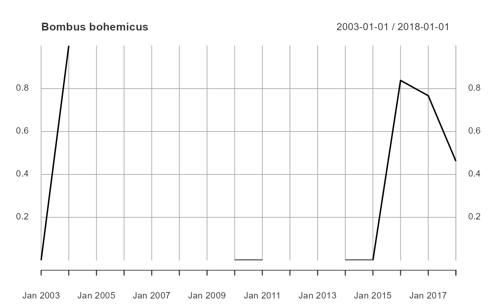

This function extracts the proportion of visits (or observations) detecting a focal species to all visits (or observations) over time or space.
obsIndex( x, dimension, timeRes = NULL, focalSp = NULL, visits = TRUE, fs.rm = TRUE, norm = TRUE )
| x | an object of class ‘SummarizeBirds’. |
|---|---|
| dimension | a character string indicating if the export should be
|
| timeRes | the time resolution as a character string if
|
| focalSp | the focal species to look for |
| visits | if TRUE (default) the observation index is calculated over number of visits, else uses the number of observations |
| fs.rm | if TRUE, assumes that the observations for the focal species are included in 'group' and will remove them |
| norm | if TRUE, the result is nomalized to a 0-1 range |
If dimension = "spatial" a ‘SpatialPolygonsDataFrame’
or a ‘xts’ timeseries if dimension = "temporal".
It implements the following algorithm to calculate the observation index: OI = log ( (At / (At + Rt) ) / ( A / (A + R) ) ) where At is the sum of observations of a focal species during time t (or gridcell), Rt is sum of observations of all species in reference group during t (or gridcell), A and R are the total sums for observations. If the ratio to log = 0 it adds 0.1 to avoid -Inf results.
Telfer, Preston 6 Rothery (2002) <doi:10.1016/S0006-3207(02)00050-2>
#> Warning: CRS object has comment, which is lost in outputPBD <- bombusObsShort OB <- organizeBirds(PBD, sppCol = "scientificName", simplifySppName = TRUE) SB <- summariseBirds(OB, grid=grid)#>spp <- listSpecies(SB) tempOI <- obsIndex(SB, "temporal", "yearly", focalSp=spp[3], fs.rm = FALSE) plot(tempOI$relObs, main=spp[3])spatOI <- obsIndex(SB, "spatial", focalSp=spp[3]) minOI <- min(spatOI$relObs, na.rm=TRUE) maxOI <- max(spatOI$relObs, na.rm=TRUE) palRW <- leaflet::colorNumeric(c("white", "red"), c(minOI, maxOI), na.color = "transparent") sp::plot(spatOI, col=palRW(spatOI$relObs), border="grey", main=spp[3])legend("bottomleft", legend=seq(minOI, maxOI, length.out = 5), col = palRW(seq(minOI, maxOI, length.out = 5)), pch = 15, bty="n")# }